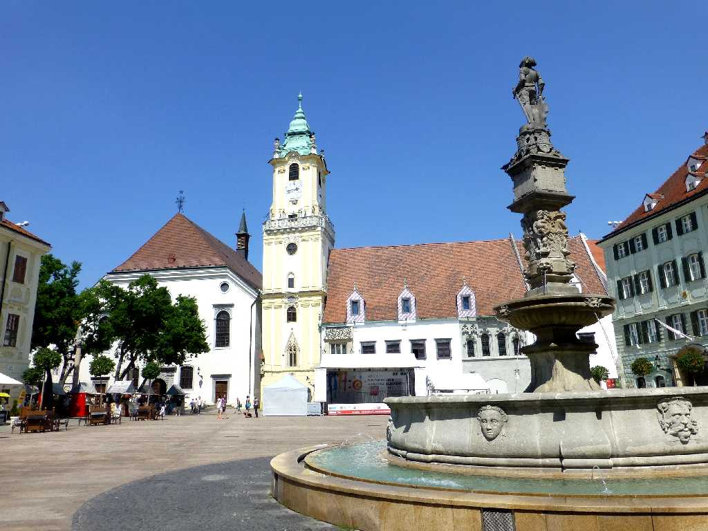
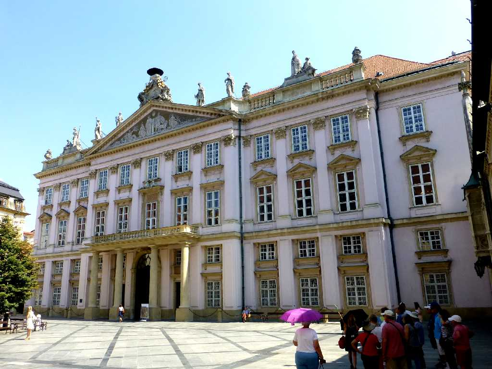
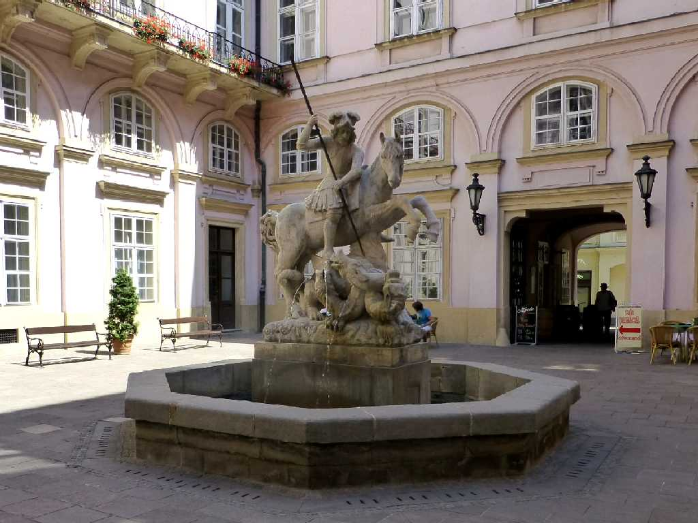
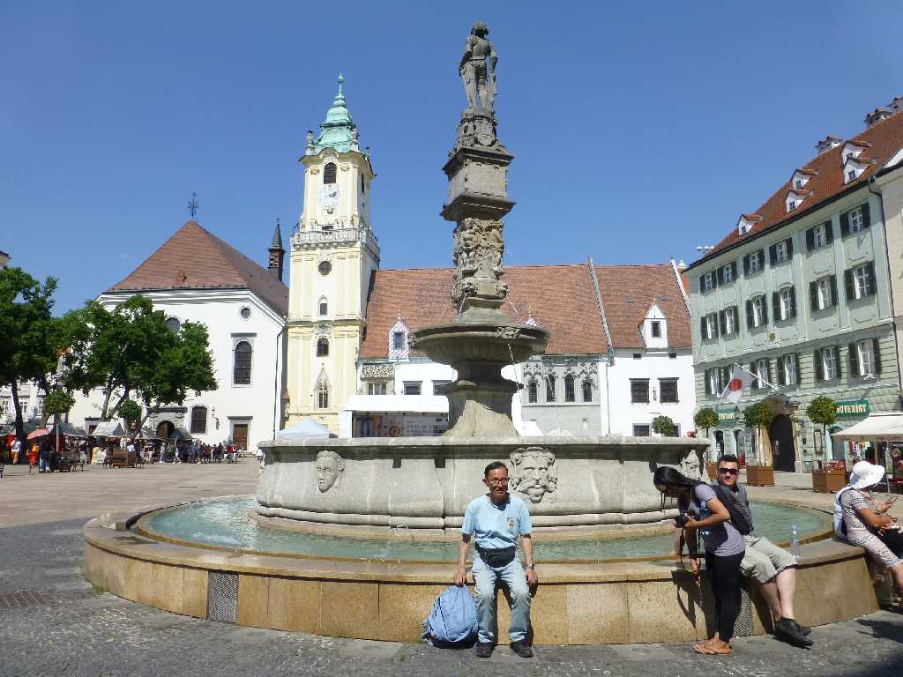

Roland Fountain Stará Radnica Hlavné námestie Bratislava
スロバキアの首都ブラチスラヴァの中央広場にあるローランドの噴水と旧市庁舎

Primaciálny Palác
旧市庁舎裏手のプリマティア大司教宮殿

St. George and the Dragon by Alojz Rigele Primaciálny Palác

July 3 2015 Hlavné námestie